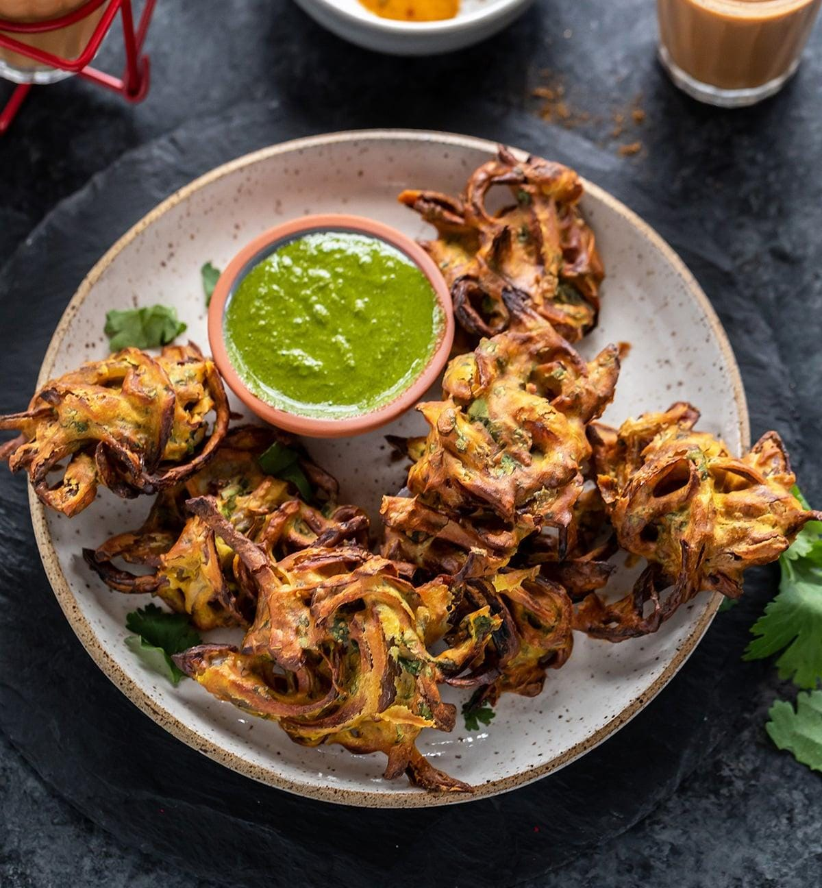

Vegetable Pakora
⭐⭐⭐⭐⭐ 4.7 Rating | ⏱ 30 Minutes | 🍽 4 Servings
Category
Snack
Difficulty
Easy
Calories
280 kcal
Cooking Style
Deep Fried
📋 Ingredients
- 2 Cups Gram Flour (Besan)
- 2 Onions (Thinly Sliced)
- 1 Potato (Thinly Sliced)
- 1 Green Chilli (Chopped)
- 2 tbsp Coriander Leaves
- 1 tsp Red Chilli Powder
- ½ tsp Turmeric Powder
- 1 tsp Cumin Seeds
- 1 tsp Carom Seeds (Ajwain)
- Salt to Taste
- Water as Required
- Oil for Deep Frying
🍳 Required Utensils
- Mixing Bowl
- Knife
- Cutting Board
- Deep Frying Pan
- Slotted Spoon
- Kitchen Tissue
- Serving Plate
📖 Introduction
Pakora is a popular Indian tea-time snack made by coating vegetables in a spiced gram flour batter and deep frying until crispy. It is commonly served with mint chutney or tomato ketchup.
🔬 Principle
The gram flour batter coats the vegetables and becomes crispy when deep-fried in hot oil. Proper frying temperature ensures a crunchy outside and soft inside.
👨🍳 Procedure
- Wash and slice the onions and potatoes.
- Take gram flour in a mixing bowl.
- Add turmeric, chilli powder, cumin, ajwain, and salt.
- Add chopped green chilli and coriander leaves.
- Add the sliced vegetables.
- Pour water gradually to make a thick batter.
- Heat oil in a deep frying pan.
- Drop small portions of batter into the hot oil.
- Fry on medium flame until golden brown.
- Turn occasionally for even cooking.
- Remove using a slotted spoon.
- Drain excess oil on kitchen tissue.
- Serve hot with chutney or ketchup.
⚠ Precautions
- Do not make the batter too thin.
- Maintain medium oil temperature.
- Avoid overcrowding the pan.
- Drain excess oil before serving.
- Handle hot oil carefully.
💡 Chef Tips
- Add rice flour for extra crispiness.
- Use fresh vegetables.
- Add spinach for spinach pakora.
- Sprinkle chaat masala before serving.
- Serve immediately while hot and crispy.
🥗 Nutrition Facts
| Nutrient | Amount |
|---|---|
| Calories | 280 kcal |
| Protein | 8 g |
| Carbohydrates | 28 g |
| Fat | 14 g |
| Fiber | 5 g |
🍽 Serving Suggestions
- Serve with mint chutney.
- Enjoy with tomato ketchup.
- Pair with masala tea.
- Serve with green chutney.
- Garnish with chopped coriander.
🌿 Health Benefits
- Gram flour is rich in protein.
- Vegetables provide vitamins and minerals.
- Contains dietary fiber.
- Homemade pakoras contain no preservatives.
- Best enjoyed occasionally in moderation.
✅ Result
The prepared Vegetable Pakora should be crispy, golden brown, and crunchy on the outside while remaining soft inside. It should have a delicious spicy flavour and be served hot with chutney or ketchup.
🎥 Watch Recipe Video
Learn the complete recipe by watching the step-by-step video.
▶ Watch on YouTube